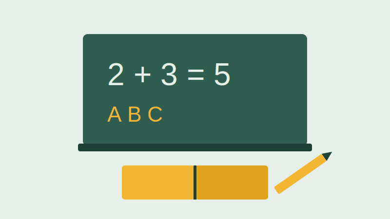
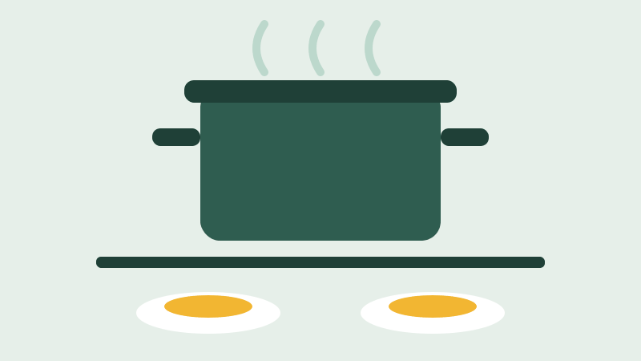
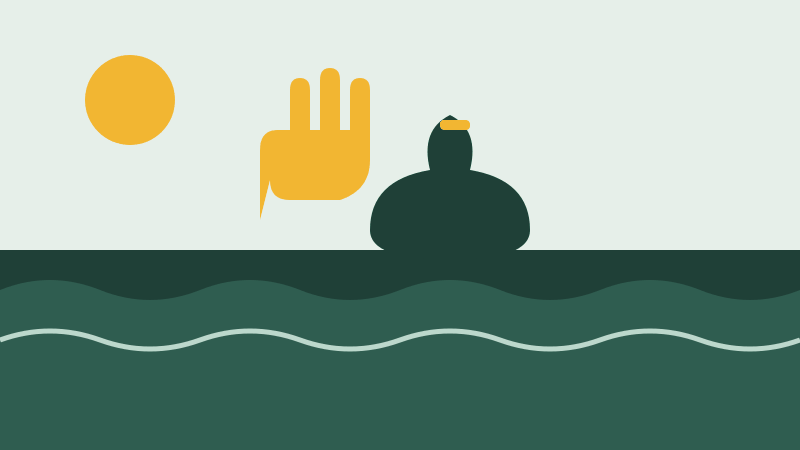
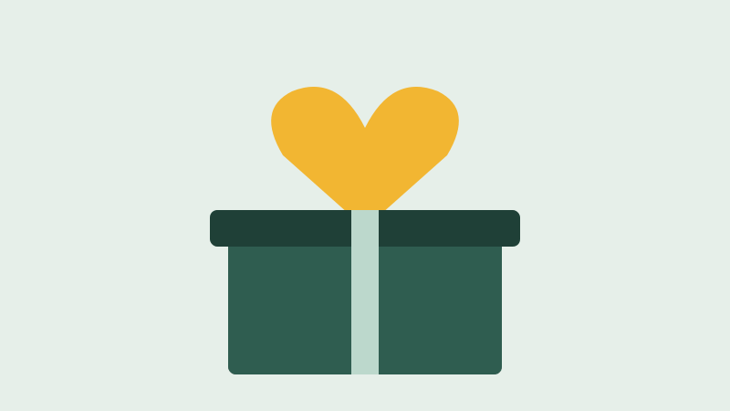

Você pode ajudar a Maré Solidária de duas formas: doando seu tempo como voluntário ou contribuindo com doações. Escolha abaixo o que combina mais com você.
Voluntariado
Cada projeto tem um coordenador voluntário e uma equipe fixa. Você pode participar de mais de um.

Aulas de reforço de português e matemática para crianças de 7 a 12 anos. Os voluntários acompanham grupos pequenos, de no máximo 5 alunos, para conseguir dar atenção de verdade para cada um.
Não precisa ser professor. Precisa ter paciência e gostar de criança.

Preparamos almoço para famílias cadastradas e pessoas em situação de rua. Os alimentos vêm de doações e de uma parceria com feirantes do Mercado de Afogados, que nos repassam o que não foi vendido.
Voluntários ajudam no preparo, na distribuição e na limpeza.

Mutirão de retirada de lixo dos canais e conversa com os moradores sobre descarte correto. Em 2025 foram retiradas cerca de 6 toneladas de resíduos.
Fornecemos luvas, botas e sacos. É só aparecer.
Fazer cadastro de voluntário
Doações
Toda doação é usada nos projetos acima. Publicamos a prestação de contas no fim de cada semestre.

Doação em dinheiro
Qualquer valor ajuda. Com R$ 30 a Cozinha da Comunidade serve cerca de 10 refeições.
- Chave Pix (CNPJ)
- 00.000.000/0001-00
- Favorecido
- Associação Maré Solidária
Doação de alimentos e materiais
Recebemos na sede, de segunda a sexta, das 8h às 17h. O que mais precisamos no momento:
- Arroz, feijão, macarrão e óleo
- Material escolar (cadernos, lápis e borracha)
- Luvas e sacos de lixo para o Canal Limpo
Campanha Volta às Aulas
Janeiro e fevereiro de 2027
Todo início de ano montamos kits escolares para as crianças do reforço. A meta desta edição é entregar 300 kits. Você pode doar os materiais ou o valor de um kit completo, que sai por cerca de R$ 45.